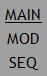
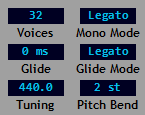
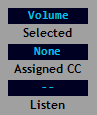
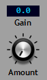
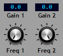
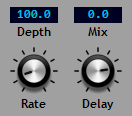
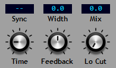
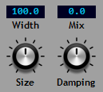

The Lower Panel¶
The sub-panel contains three separate pages accessed by the selection links on the left of the panel.
The pages available are:
MAIN - controls for general parameters, the MIDI learn function and the effects.
MOD - the modulation matrix. This is described in a separate section.
SEQ - the sequencer. This is described in a separate section.
The sections contained in the MAIN page are as follows.
Control¶
The control section provides access to these settings:
Reducktion can operate in either polyphonic or monophonic playback modes. In polyphonic mode each new keypress will result in an additional voice playing to give the desired polyphonic sound up to the maximum number of voices allowed. In monophonic mode a single voice is used to play all notes and each subsequent keypress will cause the voice to adopt each new note in turn. When a new key is pressed before the previous key has been released the voice will operate in ‘legato’ mode.
Voices - the maximum number of voices that can play at the same time. Set to 1 for monophonic playback.
Mono Mode - the retrigger behaviour for monophonic playback. This determines the behaviour of modulation envelopes and LFOs at the start of each new note. When set to ‘Retrig’ envelopes and LFOs will always be reset to their starting points (‘retriggered’) whenever a new note is played. In ‘Legato’ mode envelopes and LFOs are not retriggered when legato playback occurs but will retrigger when keypresses do not overlap.
Note, only envelopes 2 and 3 are fully reset. To avoid unwanted clicking in the audio stream envelope 1 is reset to its attack state but its output level will be left unchanged.
Glide - the glide (portamento) time in ms. This is only available in mono mode.
Glide Mode - set to ‘Legato’ to glide between notes only when they overlap or to ‘All’ to glide between all notes.
Tuning - the master tuning for the synthesizer in Hz from 390Hz to 490Hz.
Pitch Bend - the maximum range for the pitch-bend controller from 0 to 24 semitones.
MIDI Learn¶
This allows external MIDI controllers to control parameters presented by the user interface.
Reducktion responds to MIDI CC (control change) values from 0 to 119 and these can be assigned to most of the available controls. Assignable controls will appear by name in the selected window when clicked. If not the parameter cannot be controlled externally.
On selecting a parameter control its name and current MIDI status should appear in the MIDI Learn display. If a CC controller has already been assigned its value will appear in the Assigned CC display.
To remove an assigned controller ctrl-click the Assigned CC display.
To assign a controller click the Listen control to activate ‘listening’ and click the parameter you wish to assign. Move the hardware control until the parameter begins to change and its CC value appears in the Assigned CC display. Click listen again to deactivate listening.
Multiple controls can be selected while listening is active; simply click each one in turn and move the corresponding hardware controller for each.
Assigned CC controllers are saved on exit and will persist across sessions.
Effects¶
The remaining sections in the the lower panel main page provide a series of effects. These are applied in series in the order presented from left to right. The effects are applied after the amplifier stage but before the master volume control.
Drive¶
The drive effect provides distortion:
Amount - the amount of overdrive applied to the signal.
Gain - raise or lower the gain by +/-20 dB. This is applied after the overdrive effect to adjust the signal level after the effect has been applied.
Note: Gain can also be used without the overdrive as an input gain trim for the effects chain.
Equaliser¶
A two-band equaliser with high and low shelf or bell curves:
Gain 1 - the amount of gain applied to the lower band from -20 dB to +20 dB.
Freq 1 - the centre frequency of the lower band from 20Hz to 1kHz.
Gain 2 - the amount of gain applied to the upper band from -20 dB to +20 dB.
Freq 2 - the centre frequency of the upper band from 500Hz to 18kHz.
By default both bands provide shelving responses. To switch to a bell-shaped curve right-click the equaliser title bar to access the context menu.
Chorus¶
A stereo chorus:
Rate - the modulation rate from 0.1Hz to 10Hz.
Delay - the maximum delay time applied to the signal from 0.1ms to 10ms.
Depth - the amount by which the delay is varied by the modulator.
Mix - the dry/wet mix between the original signal and the chorus output with 0 being no chorus and 100 all chorus.
Delay¶
A delay with tempo-sync and ping-pong:
Time - the delay applied to the input signal in time (10ms to 6s) or host tempo units (1/32T to 1/1D).
Sync - switch between time-based and tempo-based timing.
Feedback - set the percentage of the delayed signal to be fed back into the input. Can be set to 100 for infinitely repeating delays.
Width - sets the stereo spread of the delayed signal. The stereo input of the delay is combined into a mono signal. With Width set to 0 the output is centred in the stereo field. Setting any other value causes the delayed signal to be played on either side in a ‘ping-pong’ style; the larger the value the wider the stereo spread. Positive values cause the ping-pong to start on the right, negative values on the left.
Lo Cut - a high-pass filter applied to the delayed signal from 10Hz to 14kHz.
Mix - the dry/wet mix between the original signal and the delayed output. At 100 the input and output signals are mixed equally.
Reverb¶
A reverb effect:
Size - the size of the room being emulated by the reverb.
Damping - the rate at which the reverberations are reduced.
Width - the width of the stereo spread occupied by the reverberations.
Mix - the dry/wet mix between the original signal and the reverb output. At 100 the input and output signals are mixed equally